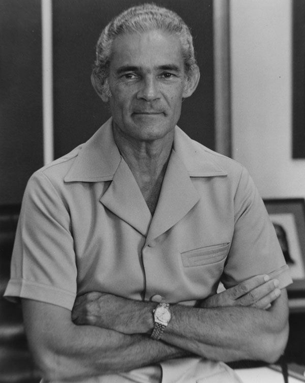

The Most Honourable
Michael Norman Manley
ON OM OCC PC
Jamaica's Most Esteemed Prime Minister

4th Prime Minister of Jamaica
Here's a time line of Michaek Manley's life:
- 10 February 1989: Birth of Michael Norman Manley.
- 1935 - 1943: He studied at Jamaica College, attended the Antigua State College and then served in the Royal Canadian Air Force during World War II.
- 1945: he enrolled at the London School of Economics.[4] At the LSE, he was influenced by Fabian socialism and the writings of Harold Laski.
- 1949: He graduated and returned to Jamaica to serve as an editor and columnist for the newspaper Public Opinion. At about the same time, he became involved in the trade union movement, becoming a negotiator for the National Workers Union.
- 1953: he became a full-time official of that union.
- 1962: he accepted an appointment to the Senate of the Parliament of Jamaica
- 1967: He won election to the Jamaican House of Representatives for the Central Kingston constituency
- 1969: After his father's retirement, Manley was elected leader of the People's National Party, defeating Vivian Blake
- 1972: He then served as leader of the Opposition, until his party won in the general elections. He instituted a series of socio-economic reforms that produced mixed results. Although he was a Jamaican from an elite family, Manley's successful trade union background helped him to maintain a close relationship with the country's poor majority, and he was a dynamic, popular leader.[9] Unlike his father, who had a reputation for being formal and businesslike, the younger Manley moved easily among people of all strata and made Parliament accessible to the people by abolishing the requirement for men to wear jackets and ties to its sittings. In this regard he started a fashion revolution, often preferring the Kariba suit, a type of formal bush-jacket suit with trousers and worn without a shirt and tie
- 1974: Manley proposed free education from primary school to university. The introduction of universally free secondary education was a major step in removing the institutional barriers to private sector and preferred government jobs that required secondary diplomas.[11] The PNP government in 1974 also formed the Jamaica Movement for the Advancement of Literacy (JAMAL), which administered adult education programs with the goal of involving 100,000 adults a year.
- 1975: Manley was the first Jamaican prime minister to support Jamaican republicanism (the replacement of the constitutional monarchy with a republic). His government established a commission into constitutional reform, which recommended that Jamaica become a republic
- Manley developed close friendships with several communist and socialist leaders, foremost of whom were Julius Nyerere of Tanzania, Olof Palme of Sweden, and Fidel Castro of Cuba.[21] With Cuba just 145 km (90 mi) north of Jamaica, he strengthened diplomatic relations between the two island nations, much to the dismay of United States policymakers.
- 30 March 1992: Death of Michael Manley
Honours:
- 1973: VEN Order of the Liberator - Knight BAR.png Order of the Liberator, Venezuela [41]
- 1976: Ribbon jose marti.png Order of José Martí[42]
- 1978: United Nations Medal ribbon.svg United Nations Medal[43]
- 1989: Member of the Privy Council of the United Kingdom (P.C.)[44]
- 1992: Baton Order of Merit Jamaica.jpg Order of Merit of Jamaica (O.M.)[45]
- 1994: Order of the Caribbean Community (O.O.C.)[46]
If you have time, you should read more about this incredible human being on his Wikipedia entry.